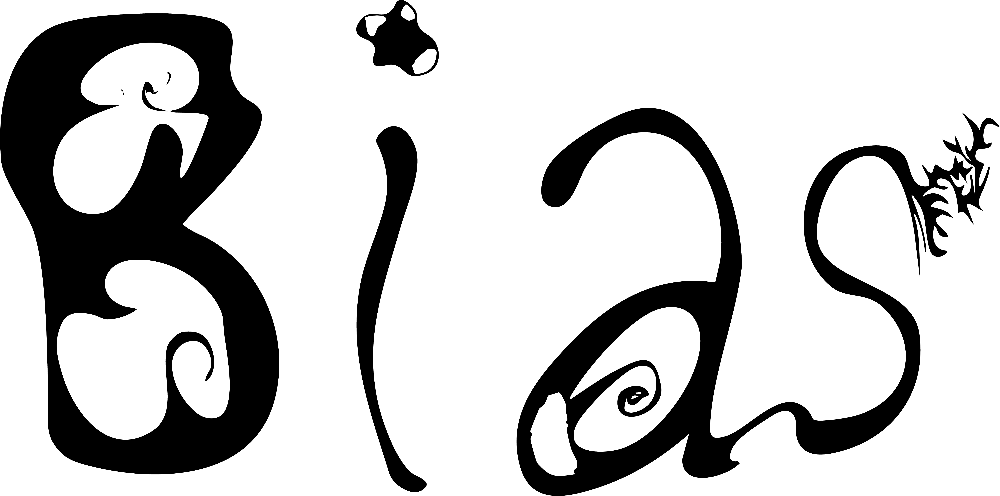

Bias は、障害や福祉に結びつけられてきた「特別」「かわいそう」「大変そう」といった イメージを更新するプロジェクトです。DISABILITY IS NORMALIZED をテーマに、 障がいを日常の一部として位置づけ直します。
福祉は長く、専門的で特別な領域として扱われてきました。 Bias は、ことば・ビジュアル・体験を通じてその境界線をゆるめ、 誰にとっても開かれた日常の風景として捉え直すことを目指します。
目的はシンプルです。障がいを特別視するのではなく、 社会のごく当たり前の前提として再配置すること。 そのための小さなデザインを積み重ねていきます。
音と光を用いた体験ライン。 クラブイベント、ミュージックイベント、ワークショップなどを通じて、 障がいのある人／ない人が同じ場とリズムを共有する状況をつくります。
ワークショップ、イベント、アートワーク、デザインの依頼・相談は、 下記のリンクから受け付けています。